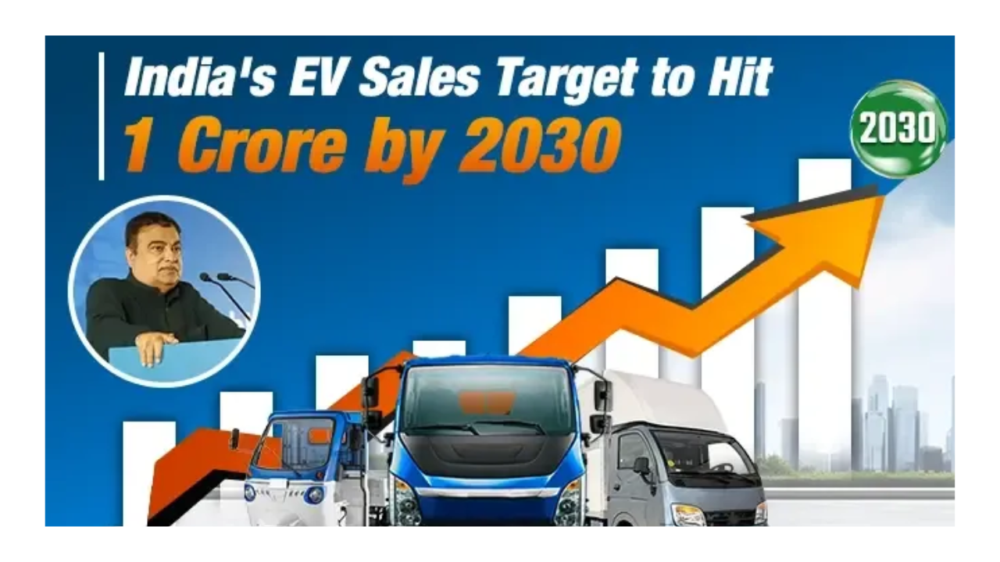
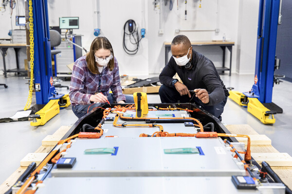
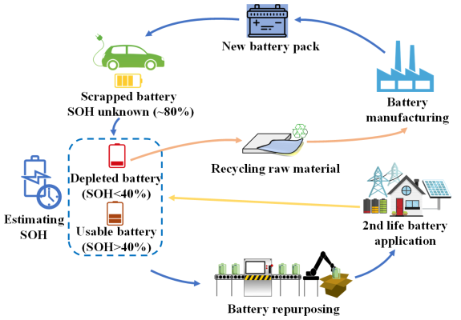

The global demand for lithium-ion batteries is experiencing unprecedented growth, driven primarily by the electric vehicle (EV) market and the increasing need for renewable energy storage. This surge presents a significant opportunity for India to establish itself as a key player in the global battery supply chain.
To capitalize on this moment, India must not only meet its domestic battery needs but also cater to international markets. By positioning itself as a leading exporter, India can tap into this booming sector, enhance its economy, and strengthen its global influence in the clean energy transition.
1. Develop a Robust Supply Chain
To become a major exporter of lithium-ion batteries, India must focus on building strategic partnerships with lithium-rich countries like Bolivia. By negotiating bilateral agreements, India can secure a steady supply of lithium and cobalt, which are essential for battery production.
- Joint Ventures: Collaborating with local Bolivian firms can enhance mining capabilities, ensuring a reliable supply chain.
- Investment in Infrastructure: Investing in Bolivia's mining infrastructure and engaging in collaborative research on extraction and processing methods will strengthen India's position.
However, challenges such as Bolivia's slow sector development and political uncertainties must be addressed when forming these partnerships.
Key Statistics:
- Projected EV Market Growth: India's EV market is expected to reach one crore units in annual sales by 2030, potentially creating five crore jobs and becoming a ₹20 lakh crore industry.

2. Invest in Advanced Manufacturing Technologies
Investing in cutting-edge manufacturing technology is crucial for India to lead in lithium-ion battery production. Enhancements in production processes through advancements like dry processing and improved material synthesis can significantly boost both cell performance and sustainability.
- Indigenous Manufacturing Facilities: Building local manufacturing plants is essential to meet the rapidly growing demand in electric vehicles and energy storage sectors.
- Data Analytics: Adopting advanced data analytics will improve efficiency while minimizing environmental impact.
Challenges:
- Reliance on imported lithium remains a significant hurdle, necessitating further technological advancements.
3. Enhance Research and Development
Enhancing research and development (R&D) capabilities is vital for India to emerge as a major exporter of lithium-ion batteries.

- Dedicated Research Centers: Establish centers focused on emerging battery technologies, particularly solid-state batteries and alternative chemistries like sodium, potassium, and magnesium-ion systems.
- Collaboration: Foster collaboration among academia, industry, and funding agencies to overcome technical challenges such as interfacial resistance and mechanical stability.
Potential Innovations:
- Developing high-performance solid-state electrolytes can improve safety and energy density compared to traditional liquid systems.
4. Strengthen Quality Control Measures
Establishing international quality standards is essential for making India a global exporter of lithium-ion batteries.
- Standardized Testing Protocols: Develop comprehensive testing protocols that cover normal operation, aging, and safety under various conditions.
- World-Class Testing Facilities: Establish facilities that perform rigorous safety tests, including thermal assessments and dynamic discharge tests.
Importance of Quality Assurance:
Ensuring quality in manufacturing requires stringent processes that monitor raw material purity and component integrity. Advanced analytical techniques are vital for maintaining consistency and preventing defects.
5. Promote Sustainable Manufacturing Processes
To promote sustainable manufacturing in lithium-ion battery production, India must focus on recycling, material optimization, and process efficiency.
- Direct Recycling Techniques: Implement methods like water electrolysis-induced gas separation to recover up to 99.5% of materials with minimal energy consumption.
- Innovations in Manufacturing: Techniques such as dry electrode production can significantly lower energy consumption while improving recyclability.

Holistic Approach:
Integrating material optimization, extended cell life, and design for recyclability ensures environmental sustainability throughout the production process.
Conclusion
India stands at a pivotal moment in the global lithium-ion battery market. With growing demand offering immense opportunities, establishing itself as a key exporter requires a strategic focus on building a robust supply chain, investing in advanced manufacturing technologies, enhancing R&D capabilities, strengthening quality control measures, and promoting sustainable practices. While challenges remain, these steps will enable India not only to meet its own needs but also to emerge as a global leader in battery production—contributing significantly to the clean energy revolution worldwide.
By adopting these strategies, India can transform its potential into reality and play a crucial role in shaping the future of energy storage solutions globally.